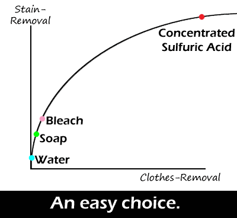

Comic JK 230
When I Feel Like It
⇤
<
?
>
⇥

⇤
<
?
>
⇥
Forum
.
RSS
.
Digg
.
Facebook
.
Reddit
.
Twitter
.
Stumbleupon
"fire, black holes, and mammaluigi" Aren't they all the same? Hee uses fireballs to get rid of clothes, and his heart is a black hole. >DAMN!!! PWNED!!! YEAH!!!! MMMMM!!!! POINTLESS!!! TEXT!!!! >> And even further to the right, we find your mom. ^^^^^^^^^^^^^^^^^^^^^^^^^^^^^^^^^^^^^^^^^^^^^^^^^ OOOOOOOOOOOOOOOOoooooooooooooooooooooooohhhhhhhhhhhhhhhhhhhhhhhhhhhhh SSSSSNAP Do these all work while one is wearing the cloths, or would that result in ass-removal? Is everyone here a goddamn moron? > No. Only you (and your penis). > I'd like to see someone try it with black holes, as long as I didn't care about the person. >I'd like to see blackholes. > Question-what would it take to remove clothes with soap? > Answer-a lot of soap ^^^ WELL HOLY SHIT, THAT CONVERSATION WAS SO WORTH LIVING THROUGH! Or a suitably attractive Luigi saying "Come-a and have-a bath-a with-a me-a". Has Liming seen this? Well, she has now. She has aids. :( Oh god, what happened? I am not good with computer. But concentrated Sulfuric Acid hurts really freaking bad... but then you would cover the burn with cold water so then...ooooh I get it... Sneaky sneaky! ;)